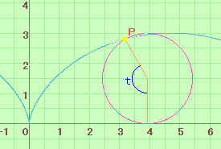
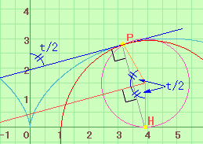

|
A wheel of radius a rolls along a horizontal line without slipping. The trace of a point on the circumference is called cycloid. The angle t in the figure is the angle through which the radius turns as the circle rolls to a new position. x=a(t-sin t), y=a(1-cos t) Then, the angle by the tangent line of cycloid and the y-axis is equal to t/2. Why? 1. The circle touches x-axis at point H. PH is perpendicular to the tangent line at P. Point P is also on a circle whose radius is PH and center point is H because point P rotates around point H at the moment. This tangent line is same to the tangent line of cycloid. 2. Since a bisector of the angle of rotation (t) is perpendicular to PH, this bisector is parallel to the tangent line of cycloid. Therefore the angle by the tangent line of cycloid and the y-axis is equal to t/2. |
  |